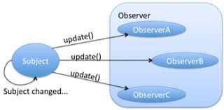

In 1994 the Gang of Four (GOF) released their famous book Design Patterns, introducing to the world twenty-three object oriented design patterns that would go on to revolutionize the software engineering field. Now in 2023, this essay will attempt to describe a few of the GOF’s holy patterns using an analogy to a different type of gang, street gangs.
Okay so first things first, we have to create a gang. We want the name of our gang to strike fear into the hearts of our enemies, so let’s call it “Market Saturation”, or MS for short. Obviously, there can only be a single instance of MS, ensuring that our gang remains powerful and centralized. This brings us to the Singleton design pattern, akin to the concept of having only one prominent gang in a city. The Singleton pattern, much like the unwavering unity of Market Saturation, ensures that there is only one instance of a class. This prevents the unnecessary duplication of resources and ensures that our gang operates as a cohesive and formidable unit.
In the world of street gangs, the importance of having a single, authoritative force is evident. Just as a city functions more efficiently when there is a single dominant gang controlling the territories, the Singleton pattern establishes a singular point of control within the code. This centralized control prevents conflicts that may arise from multiple instances vying for dominance, ensuring that the operations of our gang, or in software terms, our class, remain organized and unchallenged.
Picture this: Market Saturation, with its singular influence, controls the entire black market of a city. Similarly, the Singleton pattern establishes dominance over the instantiation of a class, allowing it to control and coordinate actions without interference from other instances.
In the gritty world of street gangs, information is power. Knowing when rival gangs make a move or when the police are closing in can be the difference between triumph and downfall. Here, we introduce the Observer design pattern, drawing parallels between the Observer pattern and the intricate communication network of our gang, Market Saturation (MS).
In the streets, MS doesn’t operate in isolation. Instead, it relies on a network of informants strategically placed throughout the city. When a significant event occurs, such as a rival gang planning an attack or a change in police activity, these informants notify the leaders. This decentralized yet interconnected system allows MS to adapt swiftly to changing circumstances.
Likewise, the Observer pattern facilitates communication between objects without them being tightly coupled. In our software world, different components or classes can subscribe and react to changes in another object without knowing the details of what changed. This fosters a flexible and modular system, much like the covert communication channels within our street gang.
Consider this scenario: one gang member observes a rival gang gathering weapons, triggering a chain reaction of alerts throughout MS. In software terms, an object’s state change triggers notifications to its dependents, ensuring that the system remains responsive and adaptive.
The Observer pattern embodies the essence of strategic intelligence, providing a mechanism for objects to stay informed about each other’s actions without direct dependencies. In the volatile landscape of both street gangs and software development, the ability to adapt to unforeseen events is a powerful advantage.

In the world of software development, the idea of comparing design patterns to street gangs might seem like an unusual analogy. However, much like a gang operating in the shadows of a city, design patterns silently influence the landscape of code. Our exploration, drawing parallels between the Singleton and Observer patterns and the hypothetical gang “Market Saturation,” serves as a whimsical journey through the diverse realms of code and street smarts.
As we humorously compared creating a gang to implementing design patterns, remember that this analogy is just that—a lighthearted metaphor. Design patterns are, in reality, powerful tools that bring structure and efficiency to software development. While the streets may be unpredictable, the patterns in code serve as reliable guides in navigating the complexities of software architecture.